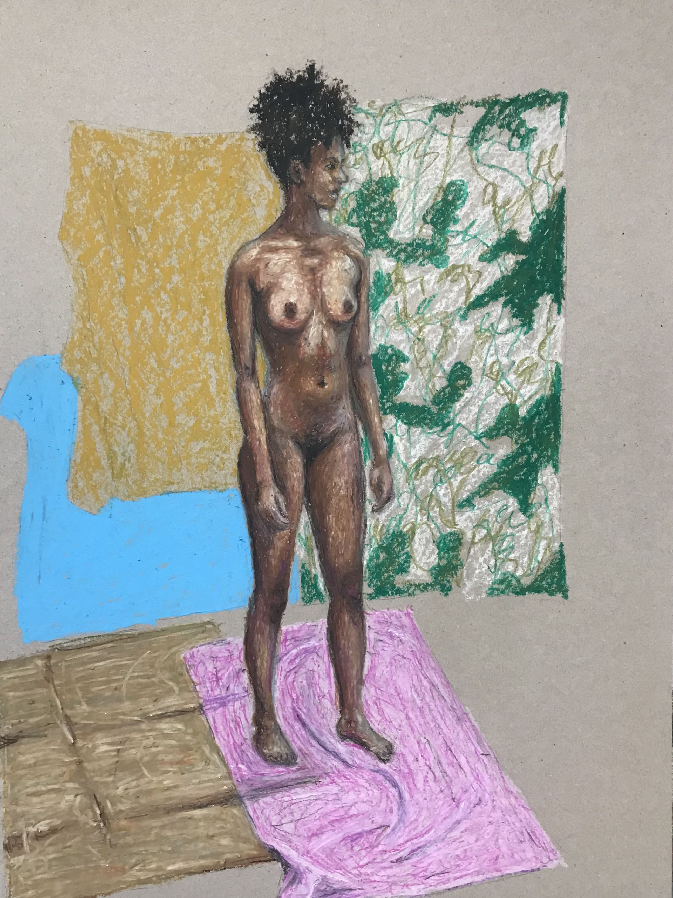
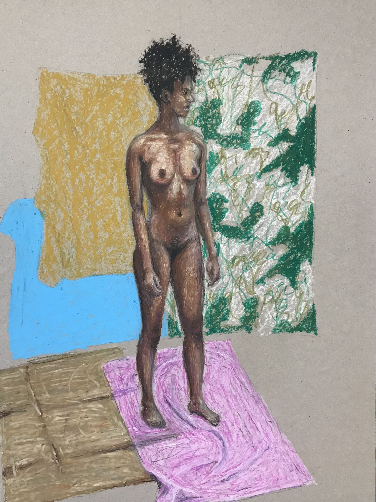

The land of Belupia
February 2022 by Ture Goldkuhl

Work in progress
Finished painting
Clopseup
Painting and studies
The land of Belupia, only recognized by the slow-tugging minds of the earth.
I wanted to try to do the trees in the style of Janel Houton.
I did several sketches to find a composition I was happy with, and then laid a
foundation of brown acrylic on the canvas. I measuered the canvas and did an equally
large sketch of how I wanted the branches to stretch. Then colored in each patch
of sky inbetween the branches according to my scheme, leaving the brown foundation
for the branches. Where each field of color met, I left a streak of the foundation
inbetween as some outline.
In the last stage of the painting, I decided to keep the dirt enclosing all around
the motif and painted in the rocks, bones and mycelium along the edges. Only the plants
are alive, so who's perspective are we seeing through?
Next slide shows the studies in closer detail.


 
